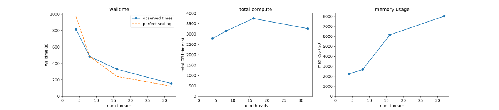
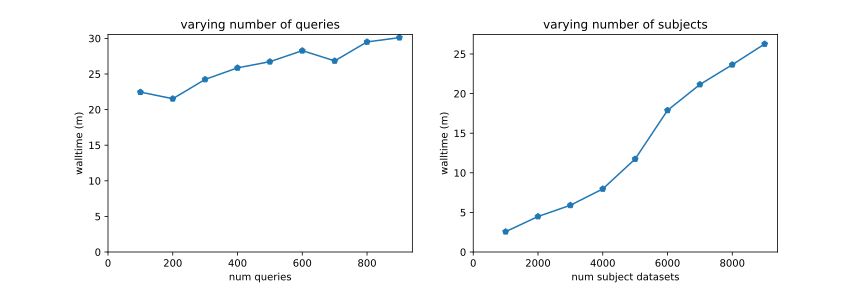

Luiz Irber 0000-0003-4371-9659
· luizirber
· luizirber
Graduate Group in Computer Science, UC Davis; Department of Population Health and Reproduction, UC Davis
· Funded by Grant GBMF4551 from the Gordon and Betty Moore Foundation; Grant R01HG007513 from the NIH NHGRI
N. Tessa Pierce-Ward 0000-0002-2942-5331
· bluegenes
· saltyscientist
Department of Population Health and Reproduction, UC Davis
· Funded by Grant 1711984 from the NSF; Grant GBMF4551 from the Gordon and Betty Moore Foundation; Grant 2018911 from the NSF
C. Titus Brown 0000-0001-6001-2677
· ctb
Department of Population Health and Reproduction, UC Davis
· Funded by Grant GBMF4551 from the Gordon and Betty Moore Foundation; Grant R01HG007513 from the NIH NHGRI; Grant 2018911 from the NSF; Grant R03OD030596 from the NIH Common Fund
We introduce branchwater, a flexible and fast petabase-scale search
for the 800,000 public metagenomes presently in the NCBI Sequence Read
Archive. Our search is based on the FracMinHash k-mer sketching
technique and can search all public metagenomes with 1000 query
genomes in approximately 24 hours using 30 GB of RAM and 32 threads.
Branchwater is a Rust-based multithreading front-end built on top of
the sourmash library. We provide biological use cases, discuss design
and performance considerations, and provide benchmarks for a variety of
different parameters.
Introduction
Substantial growth in publicly available nucleotide sequencing data
(DNA and RNA) has occurred over the last decade, driven by decreases
in sequencing costs. In particular the Sequence Read Archive now has
over 9 million entries containing 12 PB of data [1]. Shotgun
metagenomes, generated by random sequencing of mixtures of microbes
sampled from a microbiome are a particularly interesting resource
stored in the SRA.
Shotgun metagenome data sets are often large (100s of MBs to 10s of
GB) and can be highly complex, with environmental samples containing
genomic data that can be attributed to thousands or more species. In
the past decade, hundreds of thousands of new bacterial and archaeal
genomes have been isolated from public metagenomes, and several
entirely new branches of life have been discovered (large
bacteriophage, hug et al, etc. XXX)
Beyond their initial use, these data sets form an incredibly rich
resource for contextualizing novel sequencing data and for synthesis
research on a myriad of large-scale genomic questions ranging from
basic evolutionary processes to disease associations and pathogenicity
tracking (Table XXX).
However, comprehensive discovery of relevant data sets is challenging.
Metadata for these data sets is typically geared towards the
submitting researcher’s study questions and major findings, and moreover cannot
possibly describe the full contents of the data.
Furthermore, metadata provided at the time of submission can be
incomplete or inconsistent, rendering systematic data set discovery
intractable.
Content-based search is a promising alternative strategy for finding
data sets in archives. By searching with genomic content of interest,
content-based search can recover datasets containing relevant species
or genes of interest regardless of their associated metadata.
However, search of unassembled sequence is critical to ensure unbiased
and comprehensive recovery of relevant datasets. Assembly techniques
are designed to produce consensus reference sequences useful for
consistent comparisons across genotypes, often collapsing sequence
variation in the process. In addition, reassembly and reanalysis of
existing data using different parameters or newer methods often yields
different results. Content-based search of unassembled metagenomes
can bypass these issues and facilitate consistent downstream analysis
across data sets that may have been initially generated to answer a
range of disparate biological questions, and been first analyzed over
a range of years and with myriad techniques.
A number of approaches have been developed to enable content-based
search of single-organism genomic and RNAseq data. Methods that
enable rapid, large-scale search across hundreds of thousands of data
sets typically leverage biological sketching techniques and
probabilistic data structures to reduce the effective search space
[2,3,4]. However, these approaches do not readily
translate to datasets with unknown levels of sequence diversity, the
defining feature of metagenomic datasets.
Recent extensive search across viral datasets … comprehensive but
time-consuming and costly, intractable for independent researchers
[5]. Also ref searchsra [6], PARTIE [7],
etc. STAT [8], Metagraph, [9], BIGSI [3]. XXX
Below, we introduce Branchwater, a petabase-scale querying system that
uses containment searches based on FracMinHash sketching to search all
public metagenome data sets in the SRA in approximately 24 hours on
commodity hardware with 1-1000 query genomes. Branchwater uses the
Rust library underlying the sourmash implementation of FracMinHash to
execute massively parallel searches of a presketched digest of the
SRA [10,11].
The availability of relatively lightweight content-based search of SRA
metagenomes addresses many of the biological use cases in Table
1 (see 3rd column). Some of these use cases have already been
explored with Branchwater: Viehweger et al. (2021) [12] used
Branchwater to discover a metagenomic sample containing Klebsiella
pneumonia that was subsequently included in an outbreak analysis, and
Lumian et al. (2022) [13] conducted a biogeographical
study on five newly generated cyanobacterial genomes from Antarctic
samples.
Table 1: Biological use cases for petabase scale sequence search of metagenomes
Use case
Description
Enabled by branchwater
Biogeography of genomes
Describe and characterize biogeographical distribution of species; identify sampling locations
Yes
Outbreak tracking
Trace pathogen spread via public data
Yes, for genomes > 10kb
Pangenome expansion
Expand and explore composition of strains, species and genus levele pangenomes (including SAGs and MAGs)
Yes
SRA metadata reannotation
Content-based validation and reannotation of SRA metagenomes
Yes
Private database access and search
Provide privacy-enabled search of large, access-restricted databases
Yes
Post-processing and cleaning MAGs
Evaluating contig-level presence and abundance across multiple metagenomes
Yes, for contigs > 10kb
Exploring breadth of plasmids etc.
Evaluating range and prevalence of laterally transferred genomic elements
Yes, for plasmids > 10kb
Exploring host range of species for regulatory evaluation
For discussion: content-based search, including MAGs and things
without marker genes.
stress lightweight resource usage
note that a key requirement of Branchwater was that we search unassembled.
discuss thresholds …somewhere.
CTB NOTE: Small viral pangenome query comment/Luiz. Association studies.
Background: FracMinHash and sourmash
FracMinHash is a bottom-sketch version of ModHash that supports
accurate estimation of overlap and containment between two sequencing
sets [11]. In brief, FracMinHash is a lossy compression approach
that represents data sets using a “fractional” sketch containing \(1/S\)
of the original k-mers. Sketches support estimation of overlap,
bidirectional containment, and Jaccard similarity between two data
sets. Unlike other common sketching techniques such as MinHash [14]
and HyperLogLog [15], FracMinHash supports these operations
between two data sets of different sizes, and unlike mash screen and
CMash does not require the original data sets [16,17].
In exchange, FracMinHash sketches are essentially unbounded in size.
The open-source sourmash software provides a mature and
well-documented command-line interface to FracMinHash, along with
Python and Rust APIs for loading and using FracMinHash sketches
[10,18]. The Python layer provides a larger
number of user experience conveniences on top of the performant Rust
layer. However, despite the thread safety of the underlying Rust code,
the CLI and Python library still operate in single-threaded mode,
which limits the utility of sourmash for very large scale
operations. Refactoring the sourmash CLI and Python libraries to take
advantage of thread safety is a substantial and ongoing effort; we
chose here to develop a dedicated CLI in Rust instead.
There are several features of FracMinHash and sourmash that limit
their utility for specific use cases. In particular, the default
scaled parameters used in sourmash do not work well for comparing or
detecting genomes smaller than 10kb in size. Nor can divergent genomes
be found; based on k-mer containment to ANI conversion
[19], we find that sourmash defaults work well for
finding matches to genomes within about 90% ANI of the query, but not
necessarily further. Finally, FracMinHash was developed for shotgun
data sets and different parameters would be required for targeted
sequencing data such as amplicon data sets. Some of these limitations
are intrinsic to FracMinHash, and others may be overcome in the future
by parameter tuning and further research.
Petabase scale search represents a specific technical challenge to sourmash
The primary design focus for the sourmash CLI has been on searching
and comparing many microbial genome-sized sketches, where for
typical parameters there are between 1000 and 10,000 hashes in each sketch. The
software provides a variety of in-memory and on-disk data structures
for organizing sketches in this size range and can search hundreds of
thousands of genome sketches with a single query in minutes in a
single thread on an SSD laptop; more complex algorithms such as the
min-set-cov approach described in [11] can take a few hours but are still
acceptably performant on most real-world data.
Branchwater faces very different challenges in searching large
collections of metagenomes. Many of these data sets are extremely
large, slow to read from disk, and individually require substantial
memory to load. Where multiple queries are used to search each
metagenome, quadratic search costs will also be incurred.
One solution we explored was a scatter-gather approach based on
a cluster-aware workflow engine (in this case, snakemake
[20]). The overhead on workflow coordination and executing
shell commands was prohibitive for our initial implementation, so we
pursued a purpose-built multithreaded solution instead.
Methods
XXX diagram
Sketching the Sequence Read Archive
We determined the accessions of all publicly available shotgun
metagenomic via the query string "METAGENOMIC"[Source] NOT amplicon[All Fields] at the NCBI Sequence Read Archive Web site,
https://www.ncbi.nlm.nih.gov/sra. We then downloaded all runs for all
accessions and streamed them into sourmash sketch dna with
parameters -p k=21,31,51,scaled=1000,abund. The output sourmash
signature files were saved as individual gzipped JSON files (each
containing 3 sketches), one file for each input run.
The resulting catalog contains 767,277 metagenome data sets as of
March 2022, with the largest category annotated as human-associated microbiomes
(Table 2). The size of all sketches together is 7.5 TB,
containing approximately 375 billion hashes per k-mer size,
representing 375 trillion k-mers . The
average sketch file size is 9.7 MB, and the median file size is 570kb. The
largest 10,000 data sets comprise 30% of the total sketch sizes.
Table 2: The 10 largest categories of metagenome data set types in the Sequence
Read Archive, as of March 2022.
“Scientific Name” provided by submitter
distinct data sets
human gut metagenome
162187
metagenome
57048
gut metagenome
47244
human metagenome
36438
soil metagenome
35323
mouse gut metagenome
26482
human skin metagenome
25700
Homo sapiens
21020
marine metagenome
14400
human oral metagenome
14235
Implementation of multithreaded search
The sra_search program is built in Rust on top of the sourmash
library for loading and comparing sketches. It implements the
following steps:
Loads all query sketches into memory from a list of files.
Loads the list of filenames containing subject sketches to search.
In a Rust closure function executed in parallel for each subject sketch filename,
loads the subject sketch from the file;
for each query, determines the estimated overlap between query and subject;
reports overlaps above a user-specified threshold.
releases all per-metagenome resources
Downsampling of sketches to higher scaled values is performed
dynamically, after load (if requested). Results are reported back to a
separate “writer” thread via a threadsafe multi-producer,
single-consumer FIFO queue. We use the rayon par_iter function to
execute the closures in parallel.
This approach leverages the core features of sourmash to efficiently
keep queries in memory and batch-process metagenome sketches without
storing them all in memory. The approach also takes advantage of the
effective immutability of queries, which can be shared without
data races by multiple processing threads.
Executing sra_search at the command line
sra_search takes in search parameters as well as two text files, one
containing a list of query file paths and one containing a list of
subject file paths. Upon execution, it reports the number of query
sketches loaded and the number of subject file paths found, and then
begins the search. It progressively reports the number of sketches
searched in blocks of 10000, and outputs matches to a CSV File.
We typically run sra_search in a snakemake workflow, which manages
environment variables and input/output files.
Performance and scaling analysis
Benchmarks TODO:
Do a benchmark of a complete query against all.
Biggest sketches are much slower.
XXX make a table with 10k-normalized time and memory for entire catalog,
largest 30%, and random sample.
sra_search is largely I/O bound, with substantial input
requirements; this is particularly clear from the YYY% slowdown from
loading the 10,000 biggest sketches.
sra_search scales linearly in memory and time with queries and number of threads.
Time, memory, and I/O input for 5 runs of 1000 queries against 10,000 metagenomes. Queries were randomly selected from 318k genomes in GTDB rs207. Metagenomes were randomly selected from the full catalog of 767k.
metric
observed
time
24.2 +/- 1.7 min
max RSS
16.4 +/- 1.6 GB
I/O in
93.4 +/- 1.9 GB

Figure 1:branchwater scales well with number of threads. Processing time drops linearly with number of threads, while total compute stays approximately the same and memory usage increases linearly with number of threads as each thread loads a subject to search.
CTB: should note that one thread is used exclusively for writing to CSV.
See https://github.com/dib-lab/2022-branchwater-benchmarking for
numbers and notebook.

Figure 2:branchwater scales linearly with number of queries and subjects, but number of subjects dominates runtime. Processing time increases slowly with number of query genomes used to search, because they are held in memory and fast to compare. Processing time increases quickly with number of subject metagenomes being searched, because they are large and slow to load and search.
Post-search validation
The sourmash CLI can be used to explore k-mer matches for individual
data sets. This does not validate the matches beyond confirming the
containment numbers, although sourmash provides additional information
(e.g. estimated abundances) on top of the minimal information
provided by branchwater. FracMinHash generally and Branchwater
specifically have been validated bioinformatically primarily by
mapping reads (see [11,13]). This is discussed
further below.
Sra_search is inexpensive and supports exploratory queries
CTB: Estimate cost of a run. Compare to serratus - cloud compute, data
download. Serratus is probably cheaper than $20k now but still
expensive.
Discussion
Enabling content-based search of very large collections of sequencing data
is an open problem, and approaches that work for smaller collections
rarely scale well, even for current database sizes. New methods that
take advantage of specific particularities of the query and desired
answer can help bridge the gap between more general methods by
allowing filtering large databases, resulting in more manageable
subsets that can be used efficiently with current methods.
K-mer search via sourmash branchwater is a lightweight, scalable
approach to content-based search of petabase-scale collections of
sequencing data. Branchwater is designed to recover data sets
with high nucleotide similarity to the query sequence (>90% ANI)
across the Sequence Read Archive using computational resources
available to many researchers. As this approach enables content-based
search across petabases of sequence data, we anticipate it will be
most useful for filtering large databases to generate a manageable
subset of relevant data sets that can be analyzed in detail using other
tools.
Despite its utility, branchwater search has limitations, some of which
are intrinsic to the approach, and some of which can be overcome with
improved database storage and search design. First, branchwater
search relies upon exact matching of long nucleotide k-mers, which
work best for sequences with high sequence identity (90%+ ANI),
particularly when combined with thresholding used for fast search.
Approaches using alignment-based techniques may be more useful for
detecting similarity across larger evolutionary distances [5].
Lumian et al. (2022) validated branchwater results by downloading
matching Illumina metagenomes above a specific containment threshold
and mapping the reads back to the query genomes to evaluate both
mapping detection and effective coverage. In all but one case,
k-mer-based genome detection of the query was lower than mapping-based
detection - in some cases significantly so. This was also seen with a
a smaller set of samples in Irber et al., 2022 [11], and is
likely because mapping-based approaches can tolerate mismatches, while
k-mer based approaches require exact mismatches.
Second, as designed, branchwater cannot robustly detect sequence
similarity for data sets under 10kb in size. This limit is related to
the scaling approach used to reduce the effective search space and
enable petabase-scale search. Branchwater leverages FracMinHash
sketching to build a reduced representation of each data set, which
enables direct and accurate sequence similarity and containment
comparisons without needing to access the original sequencing reads.
Because only a fraction of the original data needs to be stored,
FracMinHash sketches are good basic components in the implementation
of systems that allow searching large collections of datasets.
However, this approach comes with some detection limitations. Robust
detection requires a minimum overlap of 2-3 hashes [11]. With the
scaling used in branchwater, this represents approximately 2-3 kb of
matching sequence. Since many plasmids and most bacterial and
archaeal genomes are far larger than 10kb, branchwater is well suited
to detecting matches to such sequences in the SRA. Future storage and
search optimizations may enable higher resolution search, but for now,
sequences smaller than 10kb may be missed as a result of this
fractional k-mer selection.
Tackling biological use cases with branchwater
K-mer search via branchwater has been used in two projects so far -
Lumian et al. (2022) [13] and Viehweger et al. (2021)
[12]. Viehweger et al. used branchwater to find a metagenome
containing an additional Klebsiella pneumoniae for a large scale
analysis of outbreak data, while Lumian et al. conducted a global
biogeography analysis of five new antarctic cyanobacteria. Both
studies benefited from the low cost and comprehensive nature of the
search.
We expect a broader range and more elaborate set of use cases to
emerge as petabase scale search becomes more widely available. The low
cost of search with branchwater is particularly enabling for
exploratory efforts, although the sheer size of the underlying data
needed even for branchwater continues to present obstacles. We are
planning to focus on real-time API access to search methods XXX.
There are several scientific limitations of our approach to overcome
as well. The current search approach has limited sensitivity to
divergent sequence beyond the genus level, and cannot find smaller
matches. These are topics for future research and development.
Following up on Branchwater results
Many Branchwater use cases are intended for early-stage hypothesis
generation and refinement, i.e. branchwater implements the first part
of a “hit to lead” pipeline. Hence Branchwater operates at an early
stage in conceptual and concrete workflows. The initial steps
immediately after executing Branchwater are (1) choosing a threshold
at which to filter results, (2) evaluating the overall results by type
of metagenome retrieved, and (3) retrieving the data underlying the
matches.
The first analysis step taken is typically picking a more stringent
threshold. The default Branchwater threshold is set to 0.01
containment - any metagenome that contains more than 1% of the k-mers
in any query is reported. This is done because searches are exhaustive
- every query is searched against every subject - and so there is no extra
cost beyond the minimal space required to save the results.
Thresholds are typically chosen based on the use case and the observed
distribution of the annotated metagenome type (ScientificName from
the SRA Runinfo database). We have provided a simple script that
imports the SRA metadata and summarizes the Branchwater results at the
provided threshold (example output XXX).
After filtering, many paths can be taken. A plethora of general
purpose bioinformatics tools exist for working with the data from
individual metagenomes.
We have built two custom tools in concert with sourmash and
branchwater, genome-grist and spacegraphcats. Genome-grist performs
an entirely automated reference-based characterization of individual
metagenomes that follows the minimum metagenome cover produced by
sourmash gather with mapping of short reads; it is described in Irber
et al. [11] and was used in Lumian et al. [13]. While
genome-grist does download the entire data set in order to map the
reads, it is still reference based and thus relatively lightweight.
spacegraphcats is an assembly-graph based investigative tool for
metagenomes that retrieves graph neighborhoods from metagenome
assembly graphs for the purpose of investigating strain variation
[21]. It was used to retrieve putative accessory elements
from sourmash matches in Reiter et al. (2022) [22] and Lumian
et al. (2022) [23]. It is much heavier weight than
genome-grist because it relies on a compact De Bruijn graph, which is
expensive to build for very rich or diverse metagenomes.
Design alternatives to the current branchwater implementation
The current branchwater software is a simple and effective
implementation that is easy to analyze algorithmically and supports a
number of use cases. However, many improvements are possible:
FracMinHash analyses are based on comparing collections of 64-bit
integers, and there are many effective tools and approaches for
organizing and searching such collections more efficiently than is
presently done.
One area for particular improvement is storing and loading sketches
more efficiently. The current JSON-based format is convenient for
debugging and multi-language interoperability but is extremely
inefficient. Moreover, each file currently contains three k-mer
sketches (one per each desired k-mer search size), which means
approximately 3 times as much data is loaded per query than is
actually used. FracMinHash also could support fractional loading,
i.e. decreased resolution by loading only the bottom portion of the
sketch; this would enable must faster searches albeit at lower
resolution. This is not yet supported by the underlying sourmash
library.
Currently the data files are organized as flat files in a single
directory on a single network file system. There are a variety of
practical ways to speed up the search by distributing sketch files
across multiple nodes, but this is logistically challenging. In
particular, our current usage involves running branchwater once every
few weeks on our HPC, which does not have sufficient local storage to
distribute the data sets across nodes. In addition, the speed savings from
distributing sketches across nodes is unlikely to be rewarding enough
to offset the maintenance requirements for a distributed collection of
7.5 TB of sketches. Future work could include implementation of an
automated distribution system, although careful evaluation of the
maintenance and update requirements would be needed.
We could also create a simple pre-filter for each file using a data
structure with one-sided error. For example, we could create a Bloom
filter for each sketch that could be used to estimate containment
prior to loading the full sketch file. However, for some potentially
common use cases such as queries with many matches, this could add
significant I/O without speeding up the actual search.
Building an inverted index that maps hashes to data sets could also
enable rapid queries. Two challenges here are the scale of the catalog
and the number of data sets; the total number of hashes present in our
metagenome catalog is 375 billion hashes, across nearly 800,000 data sets.
Despite these many opportunities for optimization, we argue that there
is a significant benefit to the simplicity of our current approach. In
particular, providing the sketches in individual files organized by
accession makes it straightforward to access individual sketches by a
distinct ID and quickly update the overall metagenome catalog. This
is particularly valuable since the sourmash Python package provides a
flexible suite of tools for inspecting and manipulating individual
metagenome sketches. The lack of auxiliary data structures also
avoids expensive load and synchronization steps when adding new
datasets. These features are important for downstream user
investigation as well as maintainability and correctness, which are
important considerations in any scientific software workflow.
Conclusion
We provide a flexible and fast petabase-scale search based on
FracMinHash, together with some simple downstream summarization tools
and an increasingly mature (but much slower) investigative ecosystem.
This supports and enables a wide range of biological use cases that
take advantage of public data; these use cases range from biomedical
to ecological to technical (Table 1).
Data availability statement:
All of the original data underlying the Branchwater database is
available from the NCBI Sequence Read Archive. A current catalog of
the SRA accessions is provided (here - XXX). The sketch collection is
7.5 TB and is available upon request. All sourmash sketches are
provided under Creative Commons Zero (CC0) - No Rights Reserved.
Robert C Edgar, Jeff Taylor, Victor Lin, Tomer Altman, Pierre Barbera, Dmitry Meleshko, Dan Lohr, Gherman Novakovsky, Benjamin Buchfink, Basem Al-Shayeb, … Artem Babaian
Context-aware genomic surveillance reveals hidden transmission of a carbapenemase-producing Klebsiella pneumoniae
Adrian Viehweger, Christian Blumenscheit, Norman Lippmann, Kelly L Wyres, Christian Brandt, Jörg B Hans, Martin Hölzer, Luiz Irber, Sören Gatermann, Christoph Lübbert, … Brigitte König
Felix Mölder, Kim Philipp Jablonski, Brice Letcher, Michael B Hall, Christopher H Tomkins-Tinch, Vanessa Sochat, Jan Forster, Soohyun Lee, Sven O Twardziok, Alexander Kanitz, … Johannes Köster
Meta-analysis of metagenomes via machine learning and assembly graphs reveals strain switches in Crohn’s disease
Taylor E Reiter, Luiz Irber, Alicia A Gingrich, Dylan Haynes, NTessa Pierce-Ward, Phillip T Brooks, Yosuke Mizutani, Dominik Moritz, Felix Reidl, Amy D Willis, … CTitus Brown
Metabolic Capacity of the Antarctic Cyanobacterium Phormidium pseudopriestleyi That Sustains Oxygenic Photosynthesis in the Presence of Hydrogen Sulfide
Jessica E Lumian, Anne D Jungblut, Megan L Dillion, Ian Hawes, Peter T Doran, Tyler J Mackey, Gregory J Dick, Christen L Grettenberger, Dawn Y Sumner